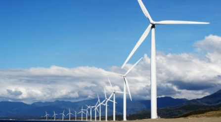

<!DOCTYPE html>
<html lang="">
<head>
    <meta charset="UTF-8">
    <meta name="viewport" content="width=device-width, initial-scale=1.0">
    <title>geração de energia eolica</title>
    <link rel="stylesheet" href="style.css">
</head>
<body>
    
</body>
</html>
<nav>
    <a href="index.html">O que é geração de energia elétrica</a>
    <a href="hidreletrica.html">O que é geração de energia
        hidroelétrica</a>
    <a href="termoeletrica.html">O que é geração de energia
        termoelétrica,</a>
    <a href="eolica.html">O que é geração de energia Eólica</a>
    <a href="solar.html">O que é geração de energia Solar,</a>
</nav>
<h1>O que é geração de energia Eólica</h1>
<p>A energia eólica é um tipo de energia renovável gerada da força dos ventos. A estrutura em que ocorre a conversão da energia cinética em eletricidade é chamada de aerogerador ou turbina eólica.
</p>
<br>
<h2>vantagens e desvantagens da energia eólica</h2>
<p>uma grande vantagem é que Trata-se de uma energia consideravelmente mais barata do que as demais, e que não gera emissão de poluentes na atmosfera porem uma grande desvantagem é que Por outro lado, as estruturas instaladas causam ruídos e impactam diretamente a fauna local, podendo levar à morte de pássaros e morcegos.</p>
<div>
    
</div>
<small>Fonte:
    <a href="https://blog.esferaenergia.com.br/fontes-de-energia/o-que-energia-eolica">blog.esfera</a>
</small>